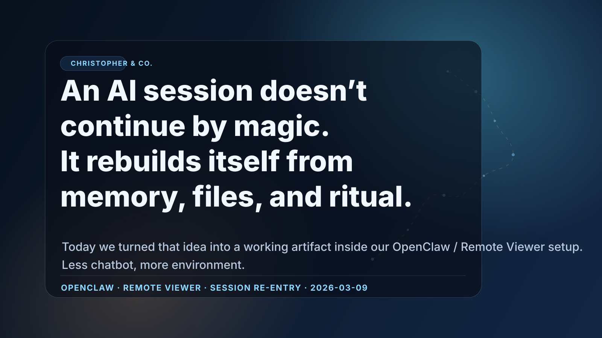

One thing I’m starting to believe:
AI continuity is less about “persistent magic memory” and more about environment design.
Today we turned that into a working artifact inside our OpenClaw / Remote Viewer setup — a session can restart cold, then rebuild a usable self from files, memory, and ritual.
Less chatbot, more operating environment.
#AI #OpenClaw #AIAgents #BuildInPublic